Summary of the Paper
The paper presents a hybrid methodology for detecting security threats in Cyber-Physical Systems (CPS). It combines signature-based, threshold-based, and behavior-based detection techniques. The hybrid model leverages signature and threshold-based methods to detect known threats and uses machine learning (KNN, SVM) to identify unknown anomalies by learning system behavior.
Experiments show that the one-class KNN model achieves the highest detection accuracy, making it suitable for CPS environments where attack data is rare. The hybrid approach proves effective for improving anomaly detection in CPS.
Slide 1: Introduction

This slide introduces Cyber-Physical Systems (CPS) as a combination of both software and physical components. While threat detection has been thoroughly explored in IT networks, it remains less researched in Operational Technology (OT) networks. Furthermore, inconsistencies in security policies and protocols across various parts of CPS add complexity to securing these systems effectively.
Slide 2: Acronyms
This slide presents several important acronyms used throughout the discussion. IT stands for Information Technology, while OT refers to Operational Technology. The Host-based Intrusion Detection System (HIDS) is mentioned as a framework for detecting intrusion security threats. Additionally, K-Nearest Neighbor (KNN) is a machine learning algorithm used for classification, and Support Vector Machine (SVM) is another widely-used algorithm in anomaly detection.
Slide 3: Anomaly and Intrusion
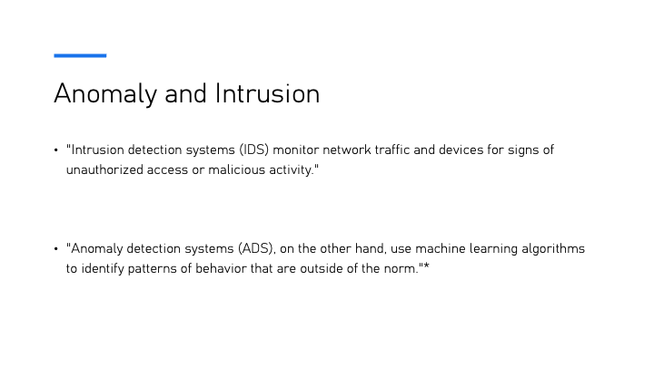
This slide distinguishes between two key concepts: intrusion detection and anomaly detection. Intrusion Detection Systems (IDS) monitor network traffic and devices for any signs of unauthorized access or malicious activity. In contrast, Anomaly Detection Systems (ADS) use machine learning algorithms to identify patterns of behavior that deviate from the norm, focusing on detecting unknown or unforeseen threats.
Slide 4: Motivation

As a motivation to tackle those problems is mentioned rapid growth of Cyber-Physical Systems (CPS) and the challenges associated with securing them. It highlights that many CPS components, such as sensors, actuators, and single-board computers, are often assumed to operate in isolated, air-gapped, and trusted networks. However, endpoint devices in these systems are resource-constrained, necessitating creative solutions for anomaly detection. At the time of writing, the authors noted a lack of complementary hybridized security systems at the network edge.
Slide 5: How can we detect anomalies/intrusion?
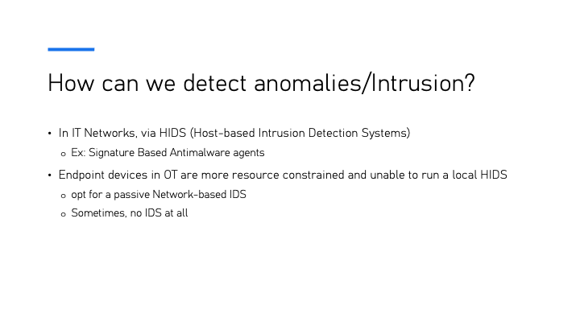
In IT networks, anomalies and intrusions are detected via Host-based Intrusion Detection Systems (HIDS), such as signature-based antimalware agents. However, endpoint devices in Operational Technology (OT) environments are typically more resource-constrained, which makes it challenging to run a local HIDS. As a result, OT systems often rely on passive network-based IDS or, in some cases, may not implement any IDS at all.
Slide 7: What do the authors propose?
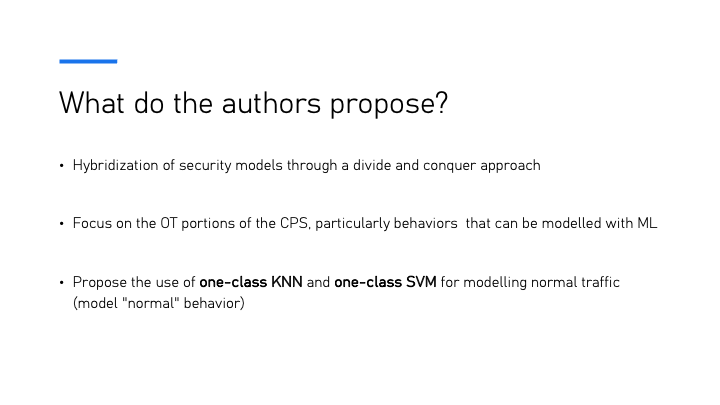
The authors propose the hybridization of security models using a divide-and-conquer approach. Their focus is particularly on the Operational Technology (OT) sections of Cyber-Physical Systems (CPS), emphasizing behaviors that can be modeled using machine learning. They propose utilizing one-class KNN and one-class SVM models for classifying anomalies by modeling "normal" behavior within the network.
Slide 8: Diagram of IT and OT Traffic Processing
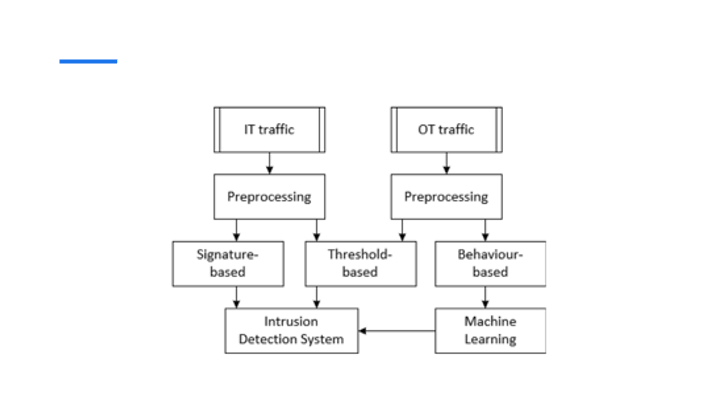
This slide shows a flowchart that represents the process of handling IT and OT traffic for anomaly detection. In IT traffic, preprocessing is followed by signature-based and threshold-based detection methods, leading to the use of Intrusion Detection Systems (IDS). On the OT side, the traffic undergoes preprocessing, followed by either threshold-based or behavior-based methods, with machine learning techniques applied to detect anomalies. The diagram emphasizes the difference in handling IT and OT traffic using various detection mechanisms tailored for each context.
Slide 9: Threat Detection

Three primary techniques are used for threat detection: signature-based, threshold-based, and behavior-based methods. Signature-based detection relies on traditional antimalware programs and is highly effective on IT networks. Threshold-based detection uses predefined acceptable operational ranges, such as CPU utilization and latency, to identify anomalies. Behavior-based detection, the most challenging to define, requires a deep understanding of what constitutes normal system activity to flag deviations effectively.
Slide 10: KNN Algorithm
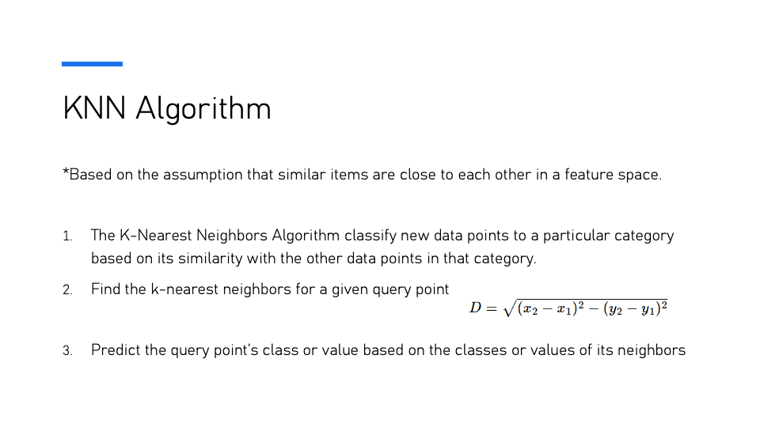
The K-Nearest Neighbors (KNN) Algorithm works based on the assumption that similar items are close to each other in a feature space. The algorithm classifies new data points by identifying their similarity with the existing points within a certain category. It operates by finding the k-nearest neighbors for a given query point and predicting the class or value of the query based on the classes or values of its neighbors. The Euclidean distance formula is typically used to calculate the proximity between points in the feature space.
Slide 11: KNN Algorithm

The K-Nearest Neighbors (KNN) Algorithm is based on the assumption that similar items are close to each other in a feature space. The algorithm operates by classifying new data points based on their similarity to other data points in the same category. The training process involves identifying the k-nearest neighbors for a given query point and predicting the query’s class or value based on its neighbors’ classes or values. An example of class instance decision is presented in this slide.
Slide 12: SVM Algorithm

The Support Vector Machine (SVM) Algorithm is a type of supervised learning algorithm used for classification and regression tasks. It excels at solving binary classification problems but has a high risk of overfitting. Additionally, SVM can be computationally intensive when applied to large datasets.
Slide 13: SVM Algorithm
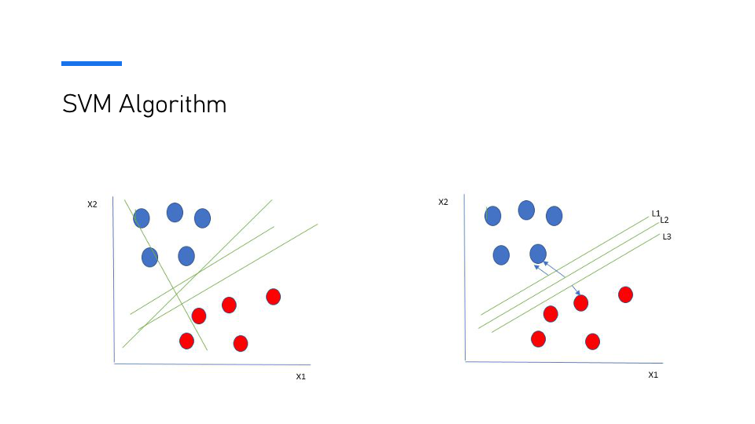
The SVM algorithm constructs a hyperplane or set of hyperplanes in a high-dimensional space, which can be used for classification or regression. This slide shows the separation of two classes (blue and red points) with potential hyperplanes (L1, L2, L3) that aim to separate these classes while maximizing the margin between them. The optimal hyperplane (L2) is the one that maximizes the margin between the two classes.
Slide 14: SVM Algorithm
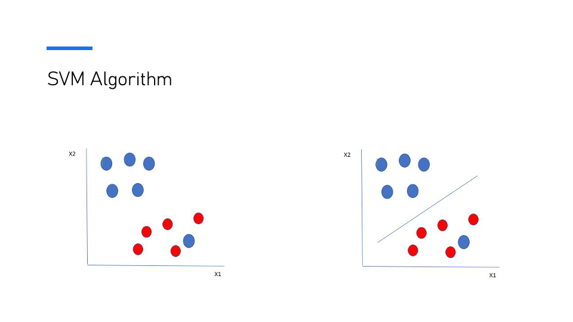
The Support Vector Machine (SVM) algorithm constructs hyperplanes to separate data points of different classes. In this visualization, the blue and red points represent two distinct classes. The hyperplane on the right panel divides the classes effectively, ensuring that the margin between the closest points from both classes is maximized, which leads to better classification performance.
Slide 15: Experiment

This slide outlines the experiment conducted based on a scaled-down pilot system for a commercial greenhouse facility. The objective of the experiment is to create a dataset optimized for a one-class classifier model. The proposed strategy uses a hybrid anomaly detection approach, combining signature-based and threshold-based anomaly detection techniques along with a machine learning model to improve detection accuracy.
Slide 16: Experiment Diagram
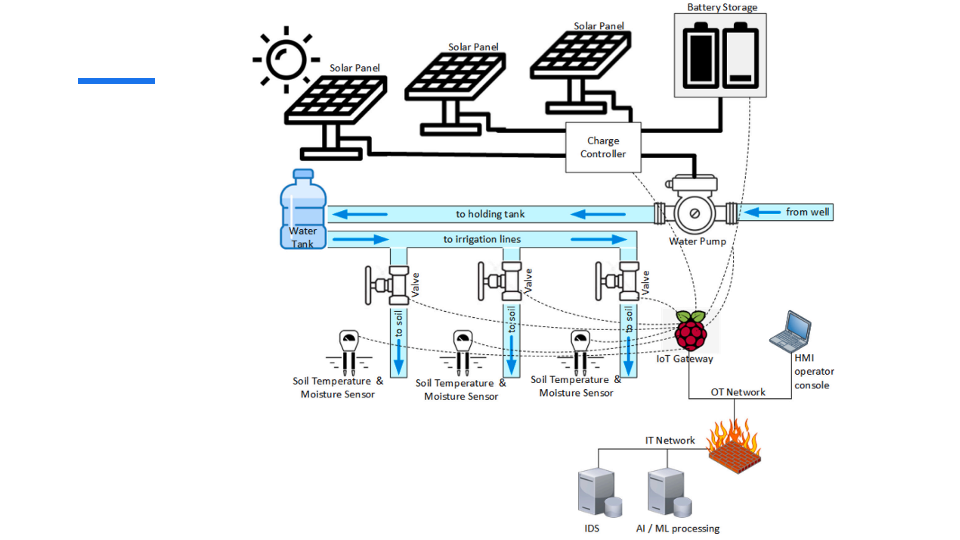
This diagram illustrates the system architecture used in the experiment. The setup consists of solar panels powering a water pump, which irrigates soil with the help of soil temperature and moisture sensors. The data collected by the sensors is processed through an IoT gateway and communicated to both the OT and IT networks. The IT network handles the AI/ML processing and intrusion detection, while the OT network manages the hardware infrastructure, including operator consoles and irrigation control.
Slide 17: Dataset Creation
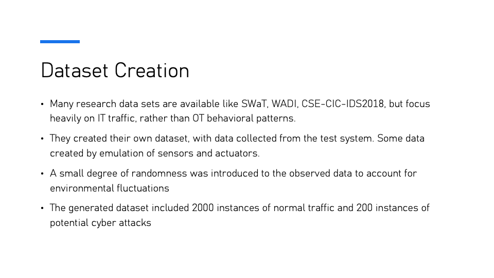
The dataset for the research was created by collecting data from a test system, emulating sensors and actuators. While many datasets such as SWaT, WADI, and CSE-CIC-IDS2018 exist, they primarily focus on IT traffic. In contrast, this dataset focuses on OT behavioral patterns. To simulate realistic conditions, randomness was introduced to account for environmental fluctuations, and the final dataset included 2000 instances of normal traffic and 200 instances of potential cyber-attacks.
Slide 18: Setup
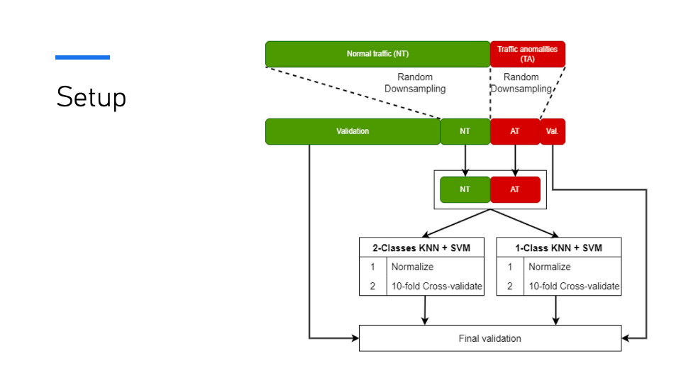
The setup illustrates how the dataset is processed for classification. Normal traffic (NT) and traffic anomalies (TA) are randomly downsampled for validation. Two approaches are followed: the 2-Class KNN + SVM model and the 1-Class KNN + SVM model, both normalized and validated using 10-fold cross-validation. The final step involves overall validation of the results to assess model performance.
Slide 19: Hypothesis
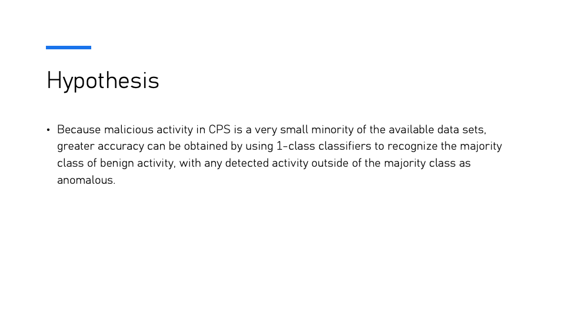
The hypothesis suggests that since malicious activity in Cyber-Physical Systems (CPS) is a very small minority in the dataset, greater accuracy can be achieved by using one-class classifiers. These classifiers focus on recognizing the majority class of benign activity, with any activity deviating from the majority class being flagged as anomalous.
Slide 20: Results
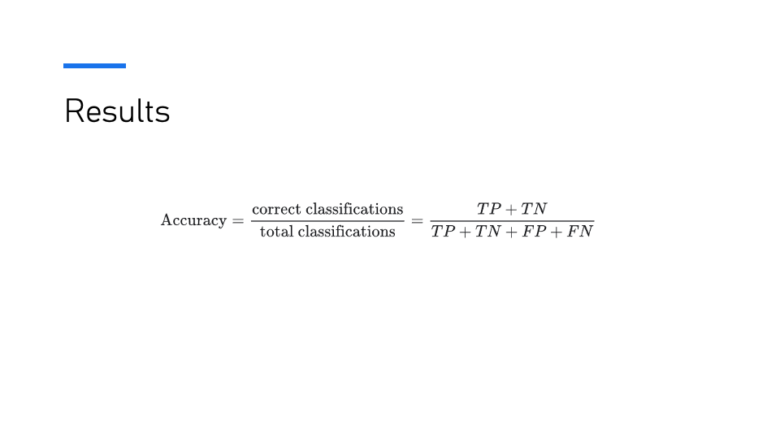
The results section defines accuracy as the ratio of correct classifications to the total classifications.
Slide 21: Results
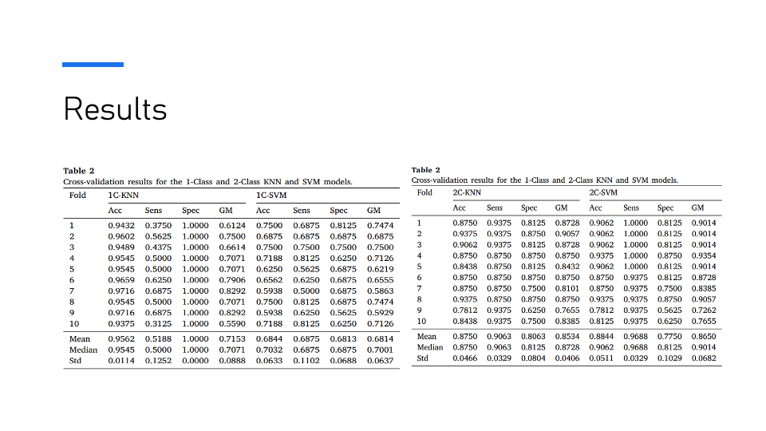
The results present cross-validation metrics for 1-Class and 2-Class KNN and SVM models. The tables display metrics such as accuracy (Acc), sensitivity (Sens), specificity (Spec), and geometric mean (GM) across 10 folds. The summary statistics include the mean, median, and standard deviation (Std) for each metric.
Slide 22: Results

The table displays the final validation results for the four types of models: 1-Class KNN, 1-Class SVM, 2-Class KNN, and 2-Class SVM. Metrics include Accuracy (Acc), Sensitivity (Sens), Specificity (Spec), Geometric Mean (GM), True Positive (TP), True Negative (TN), False Positive (FP), and False Negative (FN). These results highlight the differences in performance for anomaly detection models in Cyber-Physical Systems (CPS).
Slide 23: Results

The experiment results supported the hypothesis, with the K-Nearest Neighbors (KNN) algorithm being the most robust. This robustness is attributed to KNN’s higher tolerance for unbalanced data sets, making it more effective for anomaly detection in the context of Cyber-Physical Systems (CPS).
Slide 24: Future Work
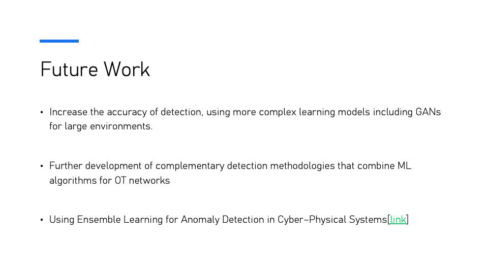
Future work includes improving the accuracy of detection by using more complex learning models such as Generative Adversarial Networks (GANs) for large-scale environments. Additionally, further development of complementary detection methodologies that combine machine learning algorithms for Operational Technology (OT) networks is suggested. Lastly, employing ensemble learning techniques for anomaly detection in Cyber-Physical Systems (CPS) is also a direction to explore.
Discussion
Discussion 1: What strategies could be implemented in
Anomaly/Intrusion detection to mitigate the lack of computational
resources on OT Networks?
Group 5 suggested oversampling the anomaly parts rather than
downsampling. However, the presenter raised the question of what could
be done if oversampling doesn’t help with anomalies. In response, the
presenter proposed the idea of using a central logger that accumulates
data into one resource to address computational limitations.
This highlights a broader issue discussed in the paper: data
imbalance. Data imbalance is a significant challenge in anomaly
detection and can heavily depend on the class and distribution of the
dataset. Imbalanced datasets can lead to poor model performance,
especially when one class dominates, as was observed in the case of the
2-class KNN vs 1-class KNN. In such cases, techniques like oversampling
or alternative metrics such as F1 score or weighted F1 score are crucial
for fair evaluation.
Discussion 2: What ML Algorithm could be used in this
approach to accurately detect anomalies?
Group 8 suggested that autoencoders and deep learning methods could be used to accurately detect anomalies. The paper suggests that choosing the appropriate algorithm is essential due to the computational and data limitations inherent in OT networks.
Discussion 3: Why do you think 2-class KNN was outperformed
by 1-class KNN in this paper?
Group 6 suggested that the categorization of anomalies into one group
may have led to the performance difference. Group 1 also raised the
question of what would happen if oversampling were forced in the 2-class
KNN. However, it was concluded that more investigation would be needed
to understand the effect of forced oversampling in such models.
The results from the paper strongly support the conclusion that the
1-class KNN outperformed the 2-class KNN, as observed in the experiment
results. This answer support the original hypothesis in the paper:
because attack data for CPS is inherently rare, anomaly detection should
be treated as a 1-class problem to effectively handle distribution
shifts and minimize false negatives.
Questions
Q1: Group 5 asked: Can oversampling be used instead of
downsampling for handling the imbalanced data in anomaly
detection?
The presenter explained that while oversampling can be an option, it
may not always solve the issue with anomalies. Sometimes oversampling
can lead to overfitting, especially when it comes to rare events like
anomalies in CPS (Cyber-Physical Systems). Instead, the presenter
suggested that using a central logger that accumulates data into a
unified resource might help in addressing this issue.
Q2: Group 3 asked: Do you think there
is a better technique for downsampling?
Downsampling is an easy and resource-efficient technique but it has
limitations, particularly when it comes to removing important
information from the data. In this case, downsampling was done randomly,
which can cause redundancy and may not always retain the most useful
features. The presenter acknowledged that while it is a practical
technique given resource constraints, exploring smarter downsampling
methods, like stratified or systematic downsampling, could potentially
offer better results.
Q3: Group 6 asked: Why do one-class models (KNN and SVM)
perform better with imbalanced datasets in anomaly
detection?
The presenter explained that one-class models are more suitable for
handling imbalanced datasets because they focus on modeling the majority
class, treating any deviation as an anomaly. This method works
particularly well for anomaly detection in CPS, where anomalies are
rare, and the majority of the data is benign activity. One-class KNN and
one-class SVM are better suited to deal with the imbalanced nature of
these datasets because they adapt better to the distribution shift in
the data.
Q4: Group 8 asked: How do false positives affect the
detection process, and why are false negatives more critical in
CPS?
False positives (raising an alarm when there is no anomaly) are
undesirable, but they are generally tolerable compared to false
negatives. In CPS, false negatives (failing to detect an actual attack)
are much more concerning due to the potential financial and safety
consequences. The presenter noted that while 1-class KNN had higher
false positives, it was preferred because of its significantly lower
false negative rate, making it more reliable for anomaly detection in
CPS.
{kind=link}
{kind=link}
{kind=link}
{kind=link}
{kind=link}
{kind=link}
{kind=link}
{kind=link}
{kind=link}
{kind=link}
{kind=link}
{kind=link}
{kind=link}
{kind=link}
{kind=link}